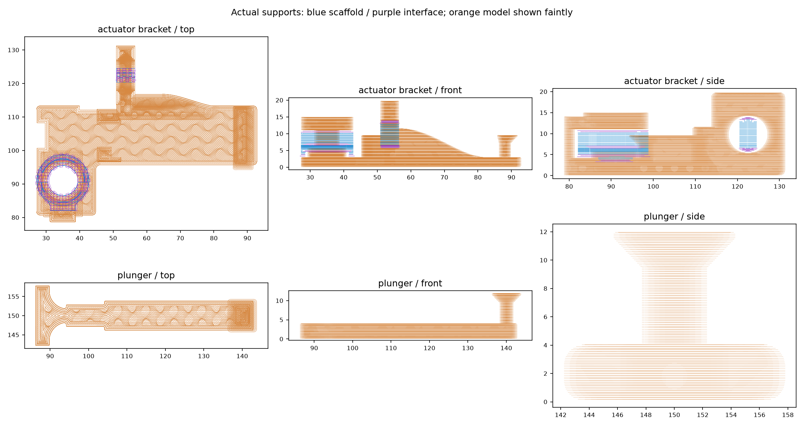
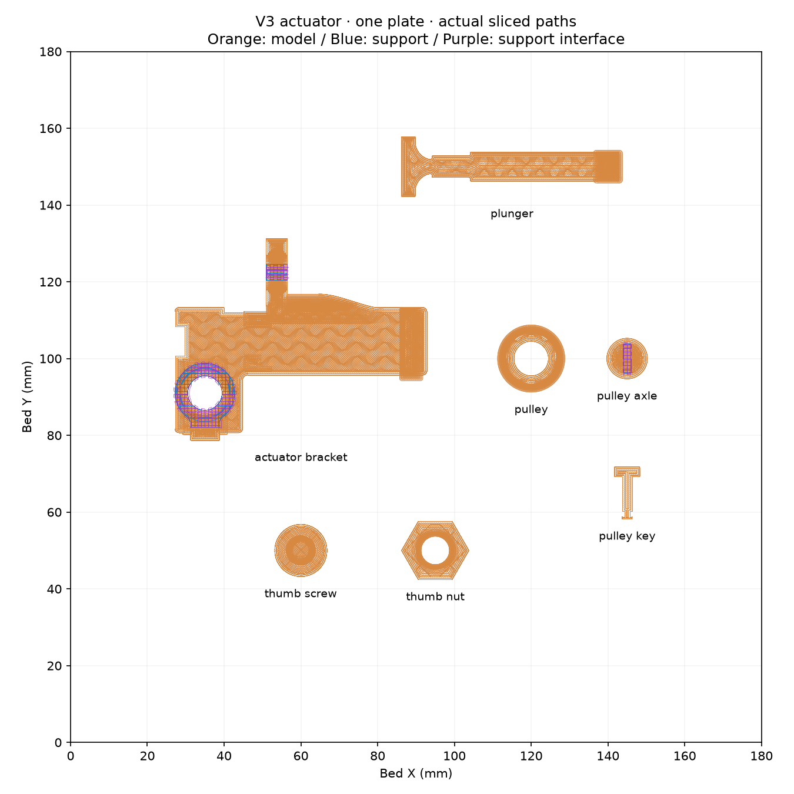

Four targeted refinements
Same recipe, placements and orientations. Support + interface: 0.810 → 0.480 g (40.7% less). Total filament: 14.15 → 13.78 g. Ramped fixed-band lip, shared-cleat cap and pulley groove flanks; outer fork leg extended to the bed. Band/string routes and all other part designs stay unchanged. Matched comparison · Preserved baseline
Inspect the actual supports
Drag to orbit; scroll to zoom. Select a part to inspect it closely. Use the height slider to expose supports hidden by higher layers. These are extrusion centerlines, not a simulated solid bead.
Recipe and plate contents
0.12 mm layers, 0.20 mm first layer; by-layer printing. Mechanism parts: 3 walls / 15% gyroid. Screw and nut: 2 walls / 15% grid, supports off. Normal Snug 30°; top/bottom gaps 0.24 mm, XY separation 0.4 mm, two interface layers. No brim or raft.
| Piece ×1 | Support + interface | Support heights |
|---|
What to inspect before printing
- Bracket: check remaining support inside the pulley fork and mounting screw bore. The outer fork leg now reaches the bed and the fixed-band lip has a ramped underside. Its new common back sits on the bed; the entire bracket does not need an underside support raft.
- Plunger: inspect the shared cleat’s ramped cap; its broad retaining rim remains. Preserve the flat stem/shoe face and clean support residue without gouging the sliding surfaces.
- Pulley and axle: check the small groove/slot regions in the preview. Any support here must be accessible and removable without damaging the running surface or cross-key slot.
- Fasteners and cross-key: supports are disabled. The existing 0.12 mm thread recipe is retained; changed geometry and loaded behavior still need testing.
Support mass is not proof of easy removal. The separate inline rubber band still needs a physical button-force/overtravel check. This plate excludes the shaft cap, jaws, collar screws, shaft guides, twine and bands.
Sliced Bambu Studio project (.gcode.3mf)
Editable arranged plate (.3mf)
Detailed slice report and hashes · Source geometry and object settings
Static support projections
Actual toolpaths, with the model faintly shown behind the support paths.

Whole-plate overhead layout
